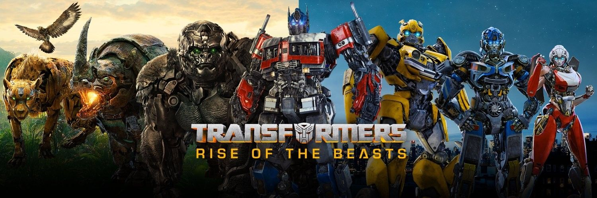

SEJARAH
Sejarah Transformers Transformers adalah waralaba fiksi ilmiah yang melibatkan robot yang dapat berubah bentuk (transform) menjadi berbagai bentuk seperti kendaraan, hewan, atau benda lainnya. Waralaba ini mencakup mainan, komik, serial televisi, dan film. Berikut adalah sejarah singkat dari Transformers:
-
Awal Mula: Diaclone dan Microman (1980-1983)
Waralaba Transformers berasal dari dua lini mainan Jepang yang dibuat oleh Takara: Diaclone dan Microman. Diaclone adalah seri mainan robot yang bisa berubah menjadi kendaraan dan benda lainnya, sementara Microman adalah seri mainan aksi yang juga bisa berubah bentuk. -
Penciptaan Transformers
(1984) Hasbro, perusahaan mainan Amerika, bermitra dengan Takara untuk membawa mainan Diaclone dan Microman ke pasar Amerika Serikat. Dengan bantuan dari perusahaan Marvel Comics, mereka menciptakan cerita latar belakang dan karakter untuk mainan ini, mengubahnya menjadi apa yang sekarang dikenal sebagai Transformers. Cerita ini melibatkan dua kelompok robot dari planet Cybertron: Autobots dan Decepticons. -
Serial Televisi dan Komik (1984-1987)
Serial televisi pertama, "The Transformers" (dikenal sebagai Generation 1 atau G1), mulai ditayangkan pada tahun 1984. Serial ini sangat populer dan membantu memasarkan mainan Transformers. Pada saat yang sama, Marvel Comics mulai menerbitkan seri komik Transformers yang juga mendapatkan banyak penggemar. -
Transformers: The Movie (1986)
Pada tahun 1986, film animasi "Transformers: The Movie" dirilis di bioskop. Film ini menampilkan banyak karakter baru dan menghadirkan perubahan signifikan dalam cerita, termasuk kematian beberapa karakter utama seperti Optimus Prime. Meskipun tidak sukses secara komersial pada awalnya, film ini kemudian mendapatkan status kultus di kalangan penggemar. -
Perubahan dan Pembaruan (1990-an)
Pada awal 1990-an, popularitas Transformers mulai menurun, namun tetap ada produk baru yang diluncurkan. Salah satu seri yang populer pada periode ini adalah "Transformers: Beast Wars" (1996-1999), yang memperkenalkan konsep baru di mana robot-robot berubah menjadi hewan daripada kendaraan. -
Era Modern (2000-an hingga Sekarang)
Transformers kembali menjadi sangat populer pada tahun 2000-an dengan peluncuran serial televisi baru seperti "Transformers: Armada" (2002-2003) dan "Transformers: Cybertron" (2005-2006).-
Film Live-Action (2007-2023):
Pada tahun 2007, film live-action pertama, "Transformers," disutradarai oleh Michael Bay dan dirilis. Film ini sukses besar dan diikuti oleh beberapa sekuel: "Transformers: Revenge of the Fallen" (2009), "Transformers: Dark of the Moon" (2011), "Transformers: Age of Extinction" (2014), "Transformers: The Last Knight" (2017), dan spin-off "Bumblebee" (2018). Pada tahun 2023, "Transformers: Rise of the Beasts" juga dirilis. -
Serial Animasi dan Komik Baru:
Selain film, Transformers terus hadir dalam bentuk serial animasi baru seperti "Transformers: Prime" (2010-2013), "Transformers: Robots in Disguise" (2015-2017), dan "Transformers: War for Cybertron Trilogy" (2020-2021). Komik Transformers juga terus diterbitkan oleh IDW Publishing dengan cerita-cerita yang kompleks dan menarik.
-
Film Live-Action (2007-2023):
-
Pengaruh Budaya Populer
Transformers telah menjadi bagian dari budaya populer selama beberapa dekade. Mainannya menjadi koleksi populer, cerita dan karakternya mempengaruhi berbagai karya fiksi ilmiah lainnya, dan waralaba ini tetap relevan dengan berbagai adaptasi dan produk baru yang terus dirilis.
Transformers tidak hanya sukses secara komersial tetapi juga telah menjadi ikon dalam dunia fiksi ilmiah dan hiburan, menciptakan pengaruh yang bertahan lama di berbagai media.